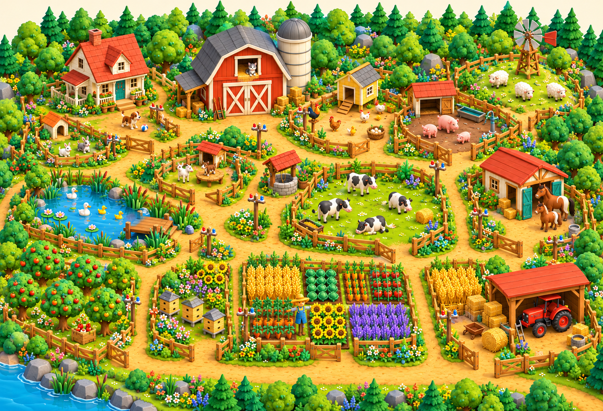
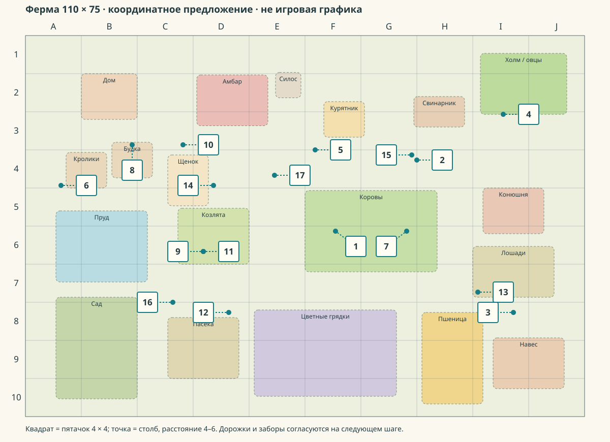
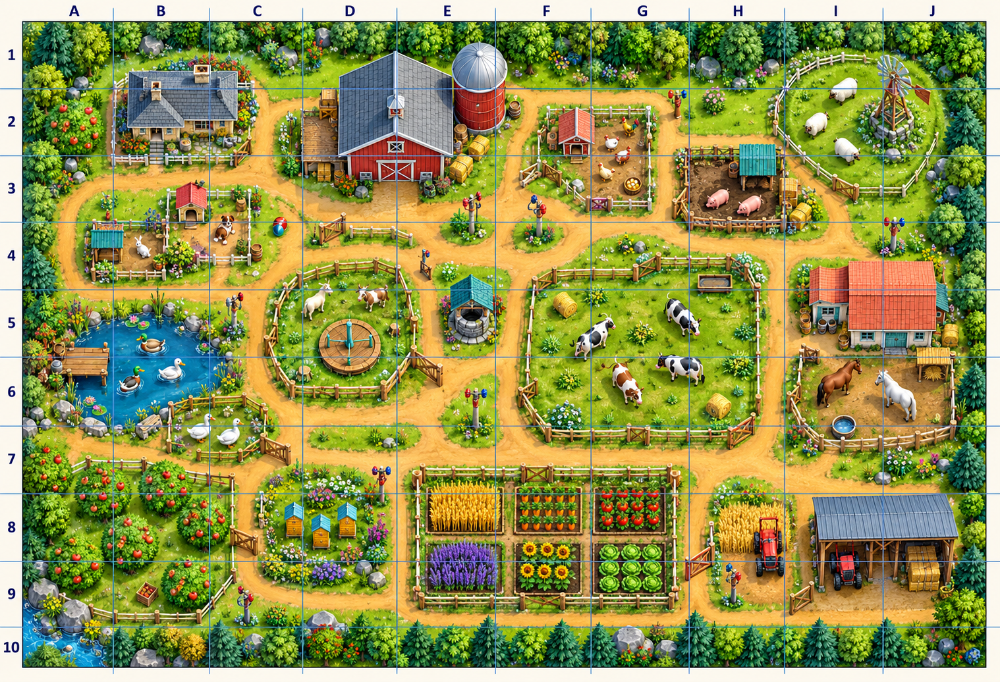

Ферма: цельная композиция
Предложение для совместного ревью. Компактная карта 110 × 75: крупный амбар, группы животных, цветные грядки, лесной край и проходы через калитки.
Образ мира

Точная сетка и места для 17 заданий
Это инженерный черновик. Клетка 11 × 7.5; белый квадрат 4 × 4; бирюзовая точка — столб в 4–6 единицах. Дорожки, ворота и ограничения механизмов ещё предстоит согласовать. Схема не заменяет игровую графику.

Художественный ориентир сверху
Image сохранил небольшой наклон и неточность нижнего ряда сетки. Для координат используем точную схему и JSON выше, а эту картинку — для композиции и цвета.

Координаты JSON · Ограничения и следующие шаги